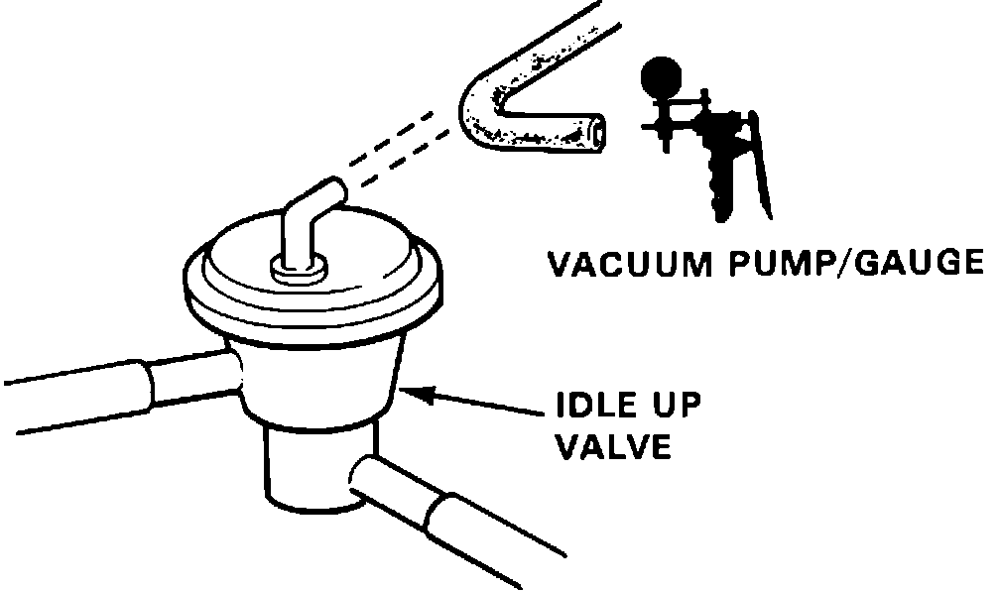

Idle Speed: Testing and Inspection
Idle-up Valve Testing:

1. Start engine and run until cooling fan comes on.
2. Disconnect vacuum hose from idle up valve and connect vacuum gauge.
Vacuum, proceed to next step.
No vacuum, proceed to step 7.
3. Disconnect 6 wire connector near idle up solenoid at firewall.
4. Check vacuum gauge.
Vacuum, proceed to next step.
No vacuum, proceed to step 6.
5. Replace idle up solenoid. End of test.
6. Check BLU wire for short to ground between ECU terminal B2 and idle up solenoid. If wire checks good, replace electronic control unit. End of test.
7. Disconnect 6 wire connector near idle up solenoid at firewall.
8. Connect battery voltage to BLK/YEL and ground to BLK solenoid wire.
9. Check for vacuum.
Vacuum, proceed to step 11.
No vacuum, proceed to next step.
10. Inspect vacuum hoses. If hoses check OK, replace electronic control unit. End of test.
11. Apply vacuum to idle up valve.
Idle increases, proceed to step 13.
No idle increase, proceed to next step.
12. Inspect idle up valve hoses for restriction. If hoses check OK, replace idle up valve. End of test.
13. Idle up system working properly, no further testing required.